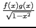
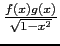

suivant: Polynôme de Tchebychev de
monter: Polynômes orthogonaux
précédent: Polynôme de Laguerre :
Table des matières
Index
Polynôme de Tchebychev de 1-ière espèce : tchebyshev1
tchebyshev1 a comme argument un entier n et eventuellement le
nom de la variable (x par défaut).
tchebyshev1 renvoie le polynôme de Tchebychev de première espèce,
de degré n, noté T(n, x).
On a :
T(n, x) = cos(n.arccos(x))
T(n, x) vérifie les relations :
T(0, x) = 1
T(1, x) = x
T(n, x) = 2xT(n - 1, x) - T(n - 2, x)
Les polynômes T(n, x) sont orthogonaux pour le produit scalaire :
< f, g > =  dx
dx
On tape :
tchebyshev1(4)
On obtient :
8*x^4+-8*x^2+1
On tape :
tchebyshev1(4,y)
On obtient :
8*y^4+-8*y^2+1
et on a bien :
cos(4.x) = Re((cos(x) + i.sin(x))4)
cos(4.x) = cos(x)4 -6.cos(x)2.(1 - cos(x)2) + ((1 - cos(x)2)2.
cos(4.x) = T(4, cos(x)).
Documentation de giac écrite par Renée De Graeve